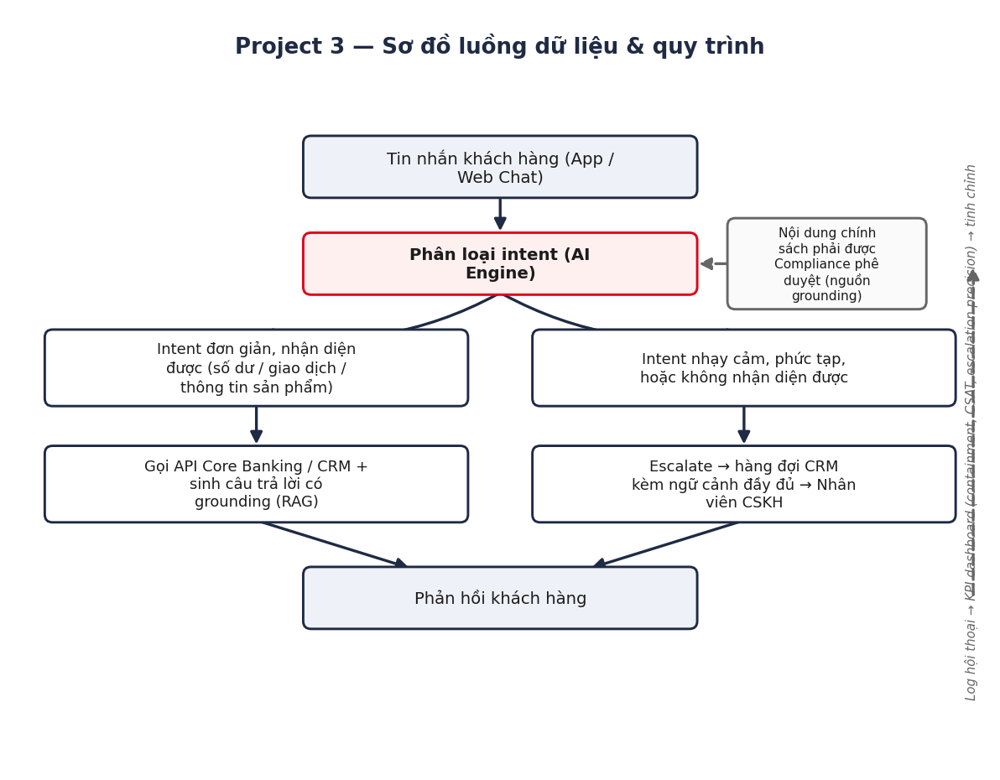
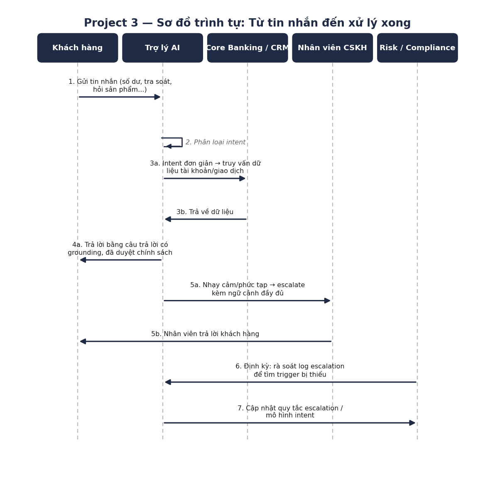
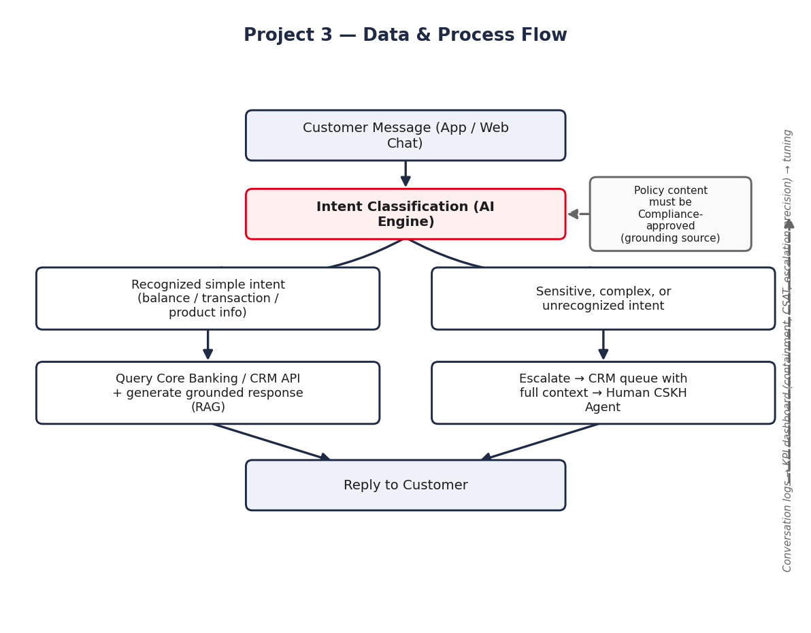
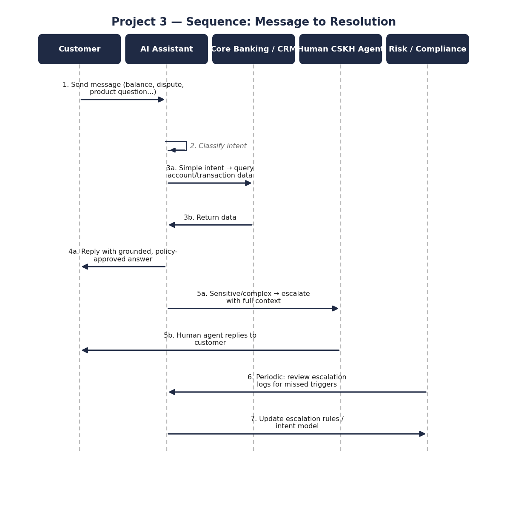

Trợ lý AI Chăm sóc Khách hàng (Chatbot) bằng GenAI
Bản demo portfolio — Business Data Analyst (AI Products) | Thực hiện bởi Kevin Ngo
1. Bối cảnh kinh doanh & Vấn đề cần giải quyết
Các đội CSKH xử lý khối lượng lớn các yêu cầu lặp lại, độ phức tạp thấp (kiểm tra số dư, tra soát giao dịch, hỏi đáp sản phẩm cơ bản) lẫn với các trường hợp phức tạp thật trong cùng một hàng đợi. Điều này làm tăng thời gian xử lý trung bình và kéo thời gian của nhân viên ra khỏi những trường hợp thực sự cần con người xử lý.
Mục tiêu kinh doanh: giảm tải và tăng tốc xử lý các yêu cầu khối lượng lớn, độ phức tạp thấp thông qua trợ lý AI hội thoại, đồng thời đảm bảo các trường hợp nhạy cảm (tra soát, gian lận, khiếu nại) luôn được chuyển cho nhân viên con người kèm đầy đủ ngữ cảnh.
2. Sơ đồ luồng dữ liệu & quy trình
Sơ đồ tổng thể cho thấy tin nhắn khách hàng được phân loại intent và xử lý theo 2 nhánh (tự động trả lời hoặc escalate cho nhân viên) — và sơ đồ trình tự mô tả cụ thể từng bước tương tác giữa khách hàng, AI, hệ thống, và nhân viên CSKH.

Hình 1. Sơ đồ luồng dữ liệu & quy trình xử lý.

Hình 2. Sơ đồ trình tự từ khi nhận tin nhắn đến khi xử lý xong.
3. Prototype tương tác (Vibe Coding demo)
Prototype giao diện tĩnh được xây dựng bằng kỹ thuật "vibe coding" hỗ trợ bởi GenAI, nhằm thống nhất UX và luồng hội thoại với các bên liên quan trước khi đầu tư thời gian phát triển. Thử ngay bên dưới — bấm vào gợi ý nhanh hoặc nhập câu hỏi:
Trợ lý AI CSKH
Demo tương tác — chưa nối API thật
4. Hạn chế & Rủi ro
- Chưa có mô hình ngôn ngữ thật — chỉ minh hoạ luồng/UX; độ chính xác, hallucination, độ trễ cần được đánh giá riêng khi tích hợp mô hình thật.
- Rủi ro hallucination: bản production phải grounding câu trả lời chính sách bằng RAG trên nội dung đã được Compliance phê duyệt.
- Quy tắc escalation cần được Risk/Compliance/lãnh đạo CSKH rà soát kỹ — thiếu một trigger escalation (ví dụ liên quan gian lận) là rủi ro ảnh hưởng đến khách hàng thật, không chỉ là một thiếu sót về UX.
5. Khung KPI / Metrics
| KPI | Tần suất | Chủ trì |
|---|---|---|
| Tỷ lệ containment / giảm tải | Hàng tuần | CSKH Ops |
| Độ chính xác phân loại intent | Hàng tuần | AI Engineering |
| Precision & recall của escalation | Hàng tuần | Risk/Compliance + CSKH |
| CSAT / tỷ lệ khiếu nại | Hàng tuần | CSKH Ops |
GenAI Customer Service Assistant (Chatbot)
Portfolio demo — Business Data Analyst (AI Products) | Prepared by Kevin Ngo
1. Business Context & Problem Statement
CSKH teams handle a high volume of repetitive, low-complexity requests (balance checks, transaction lookups, basic product inquiries) mixed with genuinely complex cases in the same queue. This inflates average handling time and pulls agent time away from cases that truly need a human.
Business objective: deflect and speed up resolution of high-volume, low-complexity requests via a conversational AI assistant, while ensuring sensitive cases (disputes, fraud, complaints) are always escalated to a human with full context.
2. Data & Process Flow Diagrams
The overall diagram shows how a customer message is classified by intent and routed down one of two branches (automated grounded reply or escalation to an agent) — and the sequence diagram details the step-by-step interaction between the customer, the AI assistant, the backend systems, and the human CSKH agent.

Figure 1. Data & process flow diagram.

Figure 2. Sequence diagram from message receipt to resolution.
3. Interactive Prototype (Vibe Coding demo)
Static front-end prototype built with GenAI-assisted "vibe coding" to align UX and conversational flow with stakeholders before committing engineering time. Try it below — click a quick-reply chip or type a question:
AI Customer Service Assistant
Interactive demo — not connected to a real API
4. Limitations & Risks
- No real language model yet — this only illustrates flow/UX; accuracy, hallucination, and latency need separate evaluation once a real model is integrated.
- Hallucination risk: the production version must ground policy answers using RAG over content approved by Compliance.
- The escalation rule set needs careful review by Risk/Compliance/CSKH leadership — missing one escalation trigger (e.g., fraud-related) is a real customer-impact risk, not just a UX gap.
5. KPI / Metrics Framework
| KPI | Cadence | Owner |
|---|---|---|
| Containment / deflection rate | Weekly | CSKH Ops |
| Intent classification accuracy | Weekly | AI Engineering |
| Escalation precision & recall | Weekly | Risk/Compliance + CSKH |
| CSAT / complaint rate | Weekly | CSKH Ops |